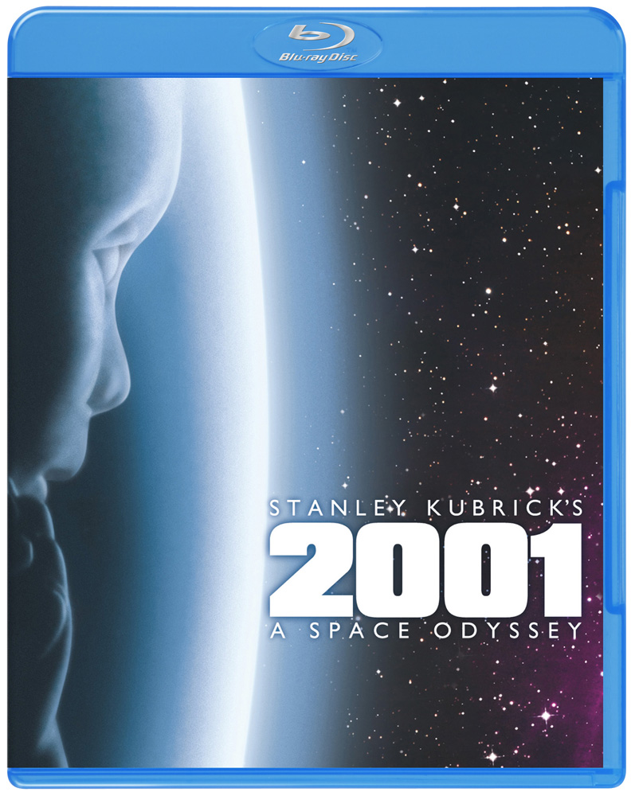
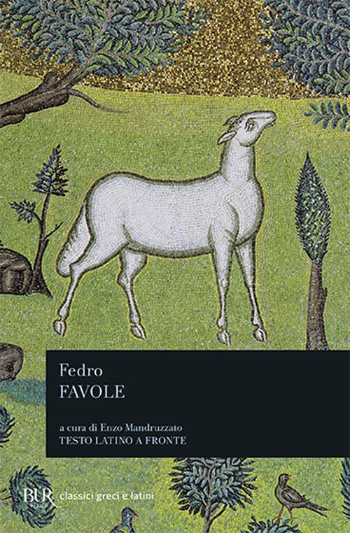
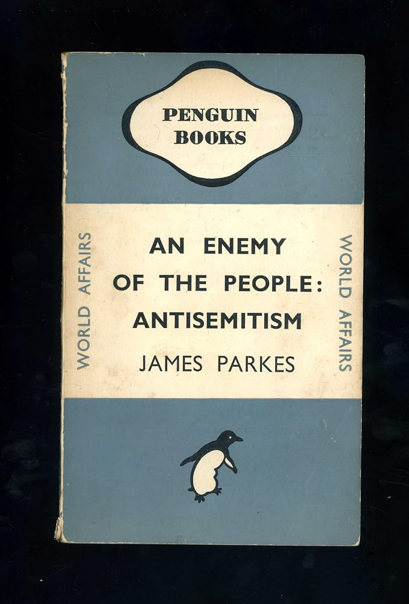
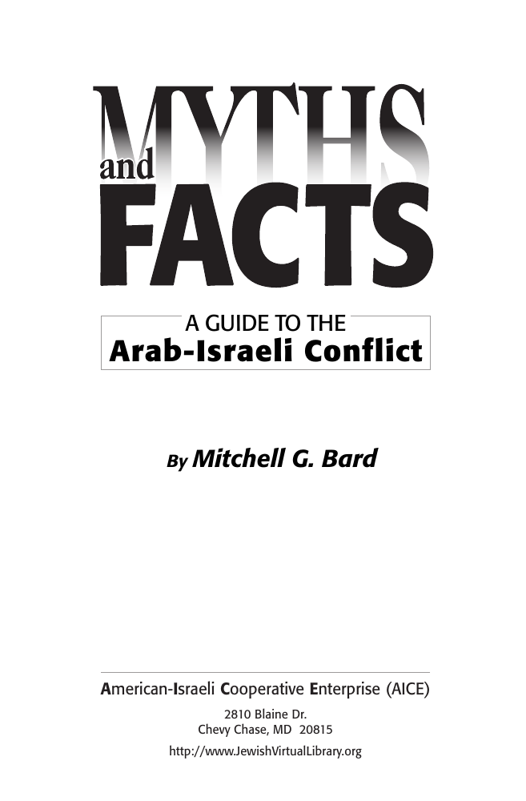
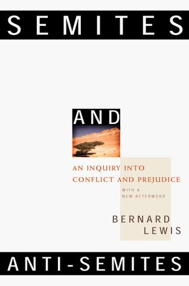
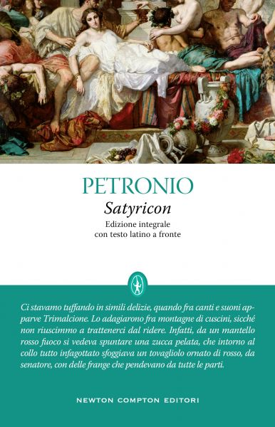

59:52 · 16 OPERE
I modi in cui Davide è stato trasformato in Golia.
Il filo del discorso
La metafora della finestra introduce un discorso sul bisogno di orientarsi nel mondo senza rinunciare alla verifica. Pessoa, Collodi e alcune leggende medievali accompagnano la critica del relatore alle rappresentazioni seducenti che sostituiscono il ragionamento. Il richiamo a HAL 9000 apre una digressione su intelligenza e autocoscienza; Platone e Pascal riportano poi al rapporto fra comprensione, passioni e giudizio.
Leggi la sintesi completaRiduci la sintesi
Nella seconda parte il discorso assume il tono di una reazione agli attacchi di Hamas del 7 ottobre 2023 e alle discussioni che ne seguono. Il relatore condanna le violenze contro i civili, contesta diversi commenti del pubblico e propone letture di Parkes, Lewis e Muravchik sull’antisemitismo e sulla rappresentazione del conflitto arabo-israeliano. La trasformazione di Davide in Golia è la chiave interpretativa che riprende da Muravchik, non una descrizione neutrale e completa della storia del conflitto. La scheda distingue la responsabilità di Hamas dalla popolazione palestinese e la critica alle politiche israeliane dall’odio antiebraico. Dati non riscontrati, giudizi su BBC e ONU, interpretazioni del caso Pasolini e previsioni di nuove violenze restano attribuiti al relatore. La conclusione ribadisce il valore della lettura e del ragionamento, mostrando anche quanto sia necessario applicare alle proprie convinzioni lo stesso controllo richiesto agli altri.
I libri nel discorso

Il libro dell’inquietudine (Livro do Desassossego)
Note sul riferimento
Copertina: Opera postuma pubblicata per la prima volta nel 1982; frammenti con assetti e selezioni diversi nelle edizioni successive. Copertina corrente Newton Compton, Vintage 67, rilegato, 416 pagine, a cura di Piero Ceccucci, traduzioni di Orietta Abbati e Piero Ceccucci, ISBN 9791224208372. Il catalogo consultato non determina qui la data della ristampa. Non è la copertina della edizione Feltrinelli di Tabucchi e de Lancastre.
Immagine autentica dell’opera, controllata visivamente; l’edizione di riferimento non è attribuita al filmato.
Titolo e autore espliciti; Bernardo Soares osserva dalla finestra.

Le avventure di Pinocchio. Storia di un burattino
Note sul riferimento
Copertina: Gangemi · illustrato da Franco Staino, 2009
Immagine autentica dell’opera, controllata visivamente; l’edizione di riferimento non è attribuita al filmato.
Pinocchio e il Paese dei balocchi sono espliciti; Gambadilegno è un riferimento estraneo al racconto di Collodi.

2001: Odissea nello spazio
Note sul riferimento
Copertina del Blu-ray del film: Warner Bros. · Blu-ray giapponese CWBA79838 · 2010
Copertina autentica del Blu-ray del film, pubblicata dal distributore Warner Bros. Giappone. È un supporto video, non la copertina del romanzo. Il codice prodotto CWBA79838 e la data 2010 descrivono questa edizione home video; il film è del 1968.
Titolo del film, Kubrick e HAL 9000 espliciti; non si registra il romanzo di Clarke.

La Repubblica
Note sul riferimento
Copertina: Laterza · La Repubblica · edizione con testo a fronte di riferimento
Immagine associata all’ISBN di riferimento e controllata visivamente; edizione e traduzione non identificate come quelle citate o lette nel video.
Titolo esplicito; segue il paragone delle lettere grandi, Repubblica 368d–369a.

Leggi (The Laws)
Note sul riferimento
Copertina: Penguin Classics,28 giugno 2005,560 pagine; traduzione, introduzione e note di Trevor J. Saunders, prefazione di Richard Stalley. Copertina della traduzione inglese; nessuna edizione attribuita al relatore.
Immagine autentica dell’opera, controllata visivamente; l’edizione di riferimento non è attribuita al filmato.
Il dialogo viene nominato insieme alla Repubblica.

Pensieri
Identificazione probabile
Note sul riferimento
Copertina: UTET · a cura di Bruno Nacci · 2021
Copertina autentica dell’edizione di riferimento, non attribuita all’esemplare del video.
La formula sul cuore e le sue ragioni è riconoscibile nei Pensieri; titolo non pronunciato.

La ballata delle madri
Note sul riferimento
Copertina della raccolta: Garzanti · 2001
La ballata delle madri è contenuta in Poesia in forma di rosa. L’immagine mostra la raccolta Garzanti del 2001, con prefazione di Edoardo Esposito, non un volume autonomo della poesia né l’edizione del video.
Il relatore cita la domanda sulle madri e nomina Pasolini; poesia riconoscibile.

Ercole e Pluto (Hercules et Plutus; Favole IV, 12)
Identificazione probabile
Note sul riferimento
Copertina della raccolta Favole: BUR · Favole, a cura di Enzo Mandruzzato · raccolta del 1979
Copertina della raccolta Favole con testo latino a fronte, riscontrata presso Rizzoli e distribuita da IBS per ISBN. Non è un’edizione autonoma di Ercole e Pluto né la traduzione identificata nel video.
Fedro nominato e frase latina riconoscibile in Ercole e Pluto; il titolo della favola non è pronunciato.

An Enemy of the People: Antisemitism
Identificazione probabile
Note sul riferimento
Copertina: Penguin Books · World Affairs n. 521 · 1945
Fotografia autentica della copertina della prima edizione britannica del 1945, con titolo e autore leggibili. Non conferma che questa sia l’edizione mostrata nel video; il richiamo al dopoguerra potrebbe riguardare l’edizione americana del 1946.
James Parkes, libretto del dopoguerra e presentazione contro la propaganda nazista; titolo completo ed edizione non leggibili nella trascrizione automatica.

The Innocents Abroad
Identificazione probabile
Note sul riferimento
Copertina: Penguin Classics · 2002 · inglese
Immagine autentica dell’opera, controllata visivamente; non identifica l’edizione usata nel video.
Mark Twain e il suo viaggio in Terra Santa identificano probabilmente The Innocents Abroad; titolo non pronunciato.

Myths and Facts: A Guide to the Arab-Israeli Conflict
Identificazione probabile
Note sul riferimento
Frontespizio dell’edizione di riscontro 2012: American-Israeli Cooperative Enterprise · frontespizio del PDF 2012
Frontespizio dalla copia ufficiale AICE del 2012. Non è una copertina esterna e non identifica l’edizione consultata nel video.
Titolo tradotto come Miti e fatti del conflitto arabo-israeliano; autore e specifica edizione restano probabili.

Semites and Anti-Semites: An Inquiry into Conflict and Prejudice
Note sul riferimento
Copertina: W. W. Norton · edizione inglese con nuova postfazione · 1999
Copertina autentica distribuita da OpenLibrary per ISBN 9780393318395. L’edizione del video non è identificata e non viene equiparata alla prima edizione del 1986.
Bernard Lewis e Semites and Anti-Semites espliciti.

Making David into Goliath. How the World Turned Against Israel
Note sul riferimento
Copertina: Encounter Books · 2014 · inglese · edizione rilegata
Immagine autentica dell’opera, controllata visivamente; non identifica l’edizione usata nel video.
Autore e titolo espliciti; consigliato come lettura principale e richiamato ancora nel finale.

FF.SS. – Cioè: …che mi hai portato a fare sopra a Posillipo se non mi vuoi più bene?
Note sul riferimento
Grafica di presentazione del film · RaiPlay: Film italiano del 1983, regia di Renzo Arbore. Grafica di presentazione autentica RaiPlay con titolo e personaggi; non una copertina di libro e non Il pap’occhio, diverso film dello stesso regista.
Immagine intera della scheda Rai, con il titolo riconoscibile. Il riferimento alla battuta resta da collazionare sul film; non si presenta la grafica come il fotogramma della scena citata.
Film FF.SS. di Arbore richiamato nel confronto con il pubblico.

Divina Commedia
Identificazione probabile
Note sul riferimento
Copertina: Giunti Barbera · Passepartout, 2021 · edizione di riferimento
Dante nominato; prima frase non localizzata. Il richiamo conclusivo al sole che tace identifica Inferno I, 60.

Satyricon
Note sul riferimento
Copertina: Newton Compton, Classici Newton Compton 61, testo latino a fronte, 256 pagine, ISBN 9788822766847. Copertina con scena di banchetto, fascia bianca del titolo e verde nella parte inferiore. Edizione dei frammenti conservati: l’indicazione commerciale integrale non implica che il testo antico ci sia pervenuto completo. Nessuna specifica edizione attribuita al filmato.
Immagine autentica dell’opera, controllata visivamente; l’edizione di riferimento non è attribuita al filmato.
Petronio e Satyricon espliciti nella digressione sulle letture.